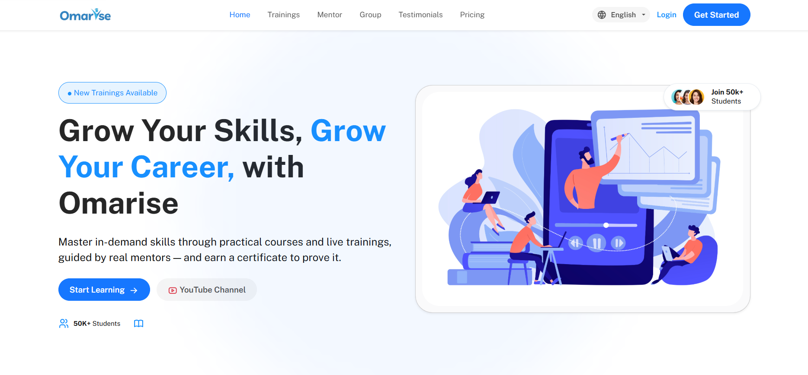
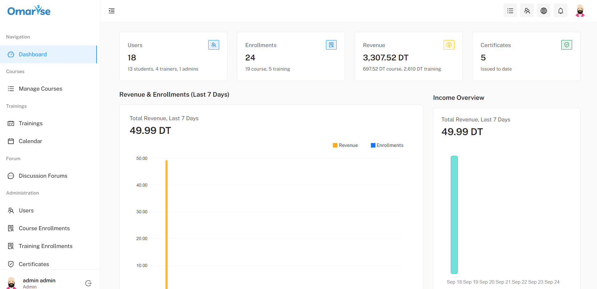
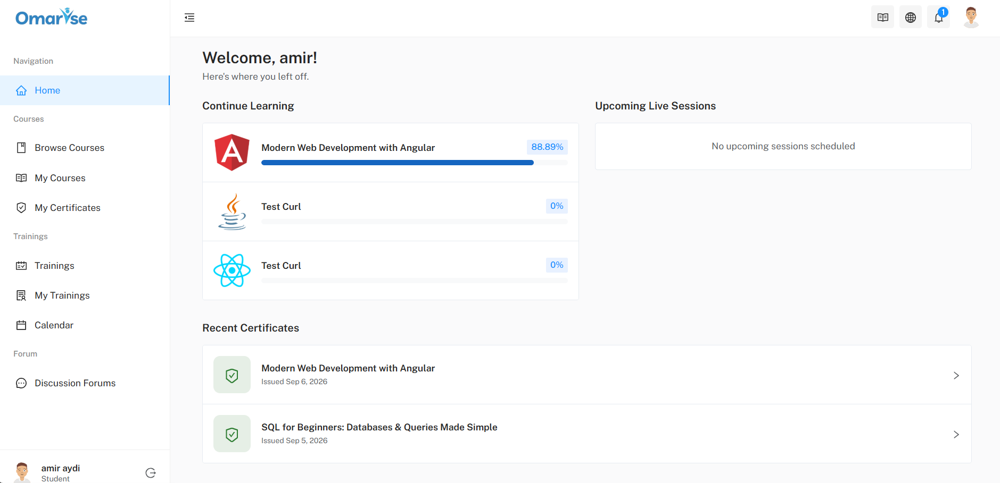
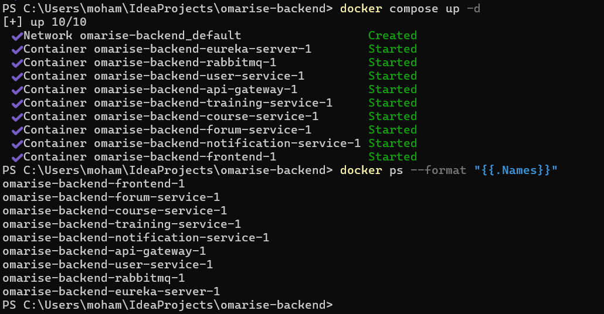
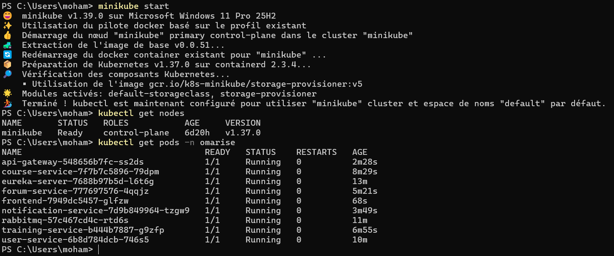
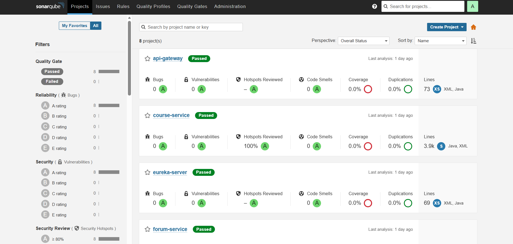
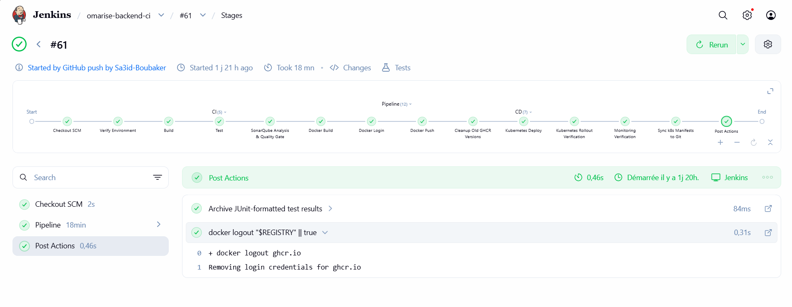
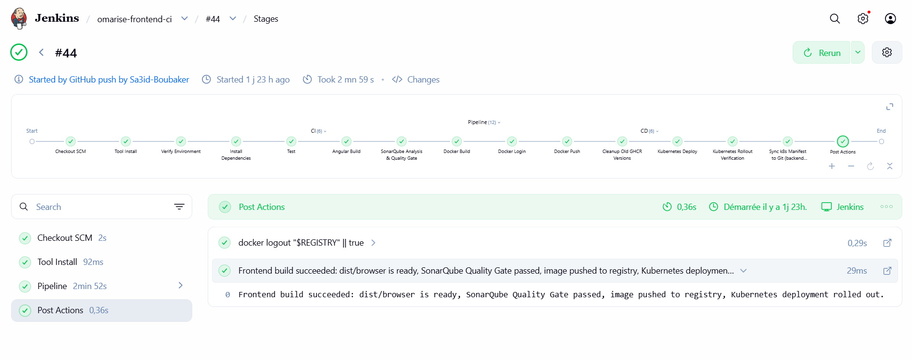
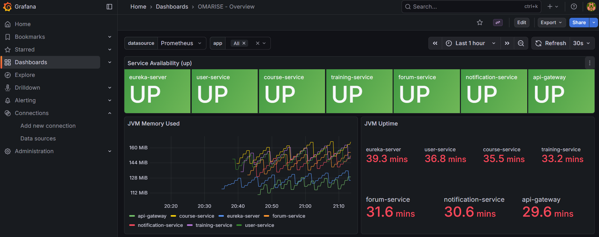
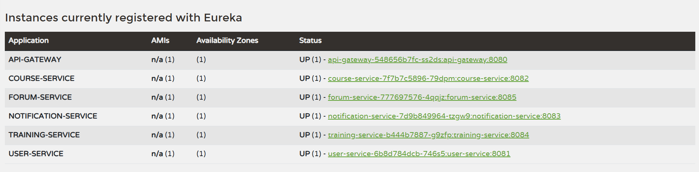

Plateforme e-learning OMARISE
Architecture microservices | Spring Boot · Angular · RabbitMQ · Kubernetes
Plateforme e-learning développée dans le cadre d'un stage chez OMARISE, avec une architecture microservices destinée à structurer les fonctionnalités d'une application de formation en ligne (cours, formations avec sessions live, forum, notifications).
Objectif du projet
Concevoir une plateforme e-learning modulaire, sécurisée et déployable, capable de faire communiquer plusieurs services indépendants (utilisateurs, cours, formations, forum, notifications) tout en garantissant scalabilité et observabilité.
Ma contribution
- Développement de services backend avec Spring Boot et Spring Cloud (7 microservices : utilisateurs, cours, formations, forum, notifications, API Gateway, Eureka).
- Mise en place de l'API Gateway et d'Eureka pour la découverte des services.
- Intégration de MongoDB et d'un frontend Angular.
- Ajout de l'authentification JWT et de la messagerie événementielle asynchrone avec RabbitMQ pour les notifications en temps réel.
- Conteneurisation avec Docker et orchestration avec Kubernetes (Minikube).
- Mise en place de pipelines CI/CD avec Jenkins (build, tests, analyse qualité SonarQube, build/push d'images, déploiement), déclenchés automatiquement à chaque push GitHub.
- Monitoring des services avec Prometheus et Grafana, avec dashboards personnalisés.
Technologies

Informations du projet
- Catégorie Développement, Cloud & DevOps
- Contexte Stage d'été
- Entreprise OMARISE
- Durée Juillet - Septembre 2026
Architecture microservices
flowchart LR
Client[Angular frontend] --> GW[api-gateway :8080]
GW --> US[user-service :8081]
GW --> CS[course-service :8082]
GW --> NS[notification-service :8083]
GW --> TS[training-service :8084]
GW --> FS[forum-service :8085]
US & CS & NS & TS & FS --> EU[eureka-server :8761]
CS -. events .-> MQ[(RabbitMQ
omarise.events)] TS -. events .-> MQ FS -. events .-> MQ MQ -. consumes .-> NS US & CS & NS & TS & FS --> DB[(MongoDB Atlas
one DB per service)]
omarise.events)] TS -. events .-> MQ FS -. events .-> MQ MQ -. consumes .-> NS US & CS & NS & TS & FS --> DB[(MongoDB Atlas
one DB per service)]
Captures du projet









